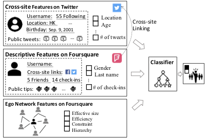
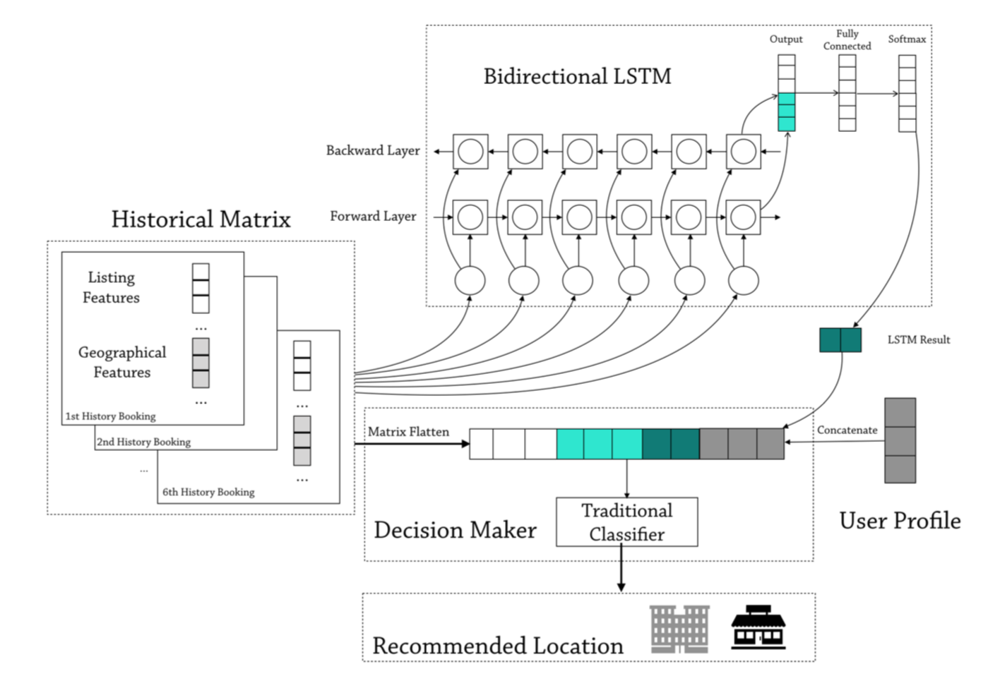
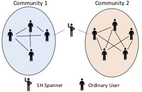
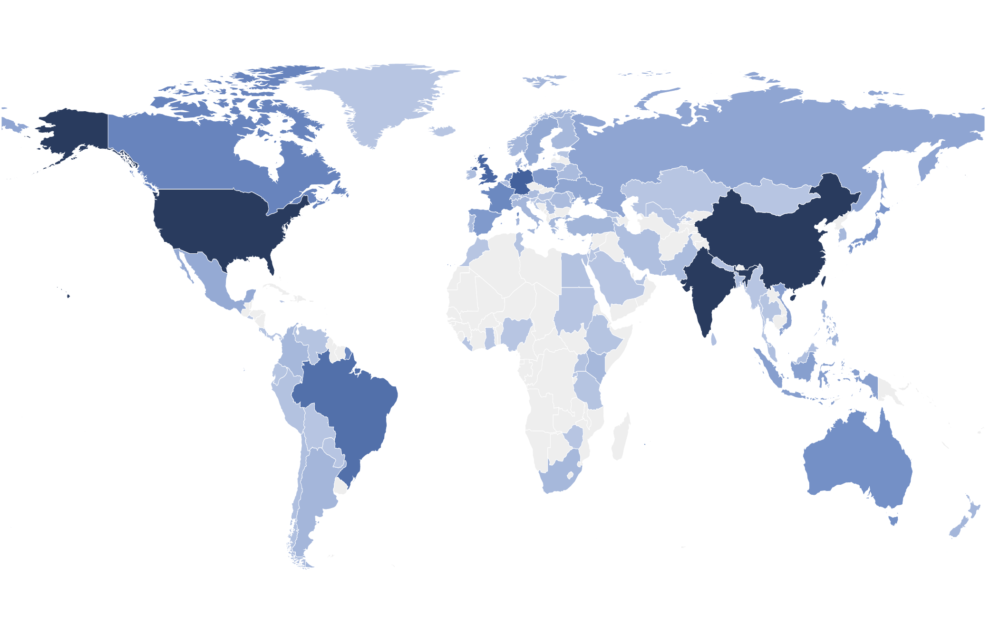
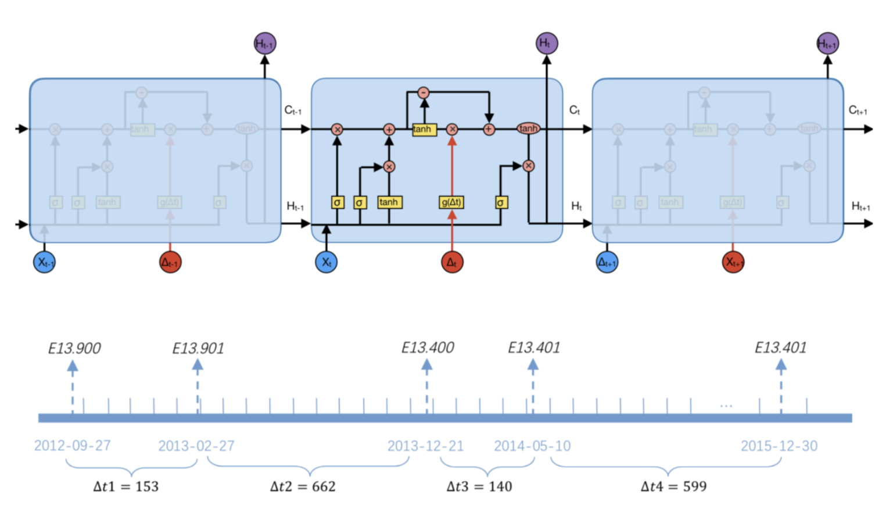
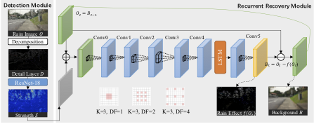
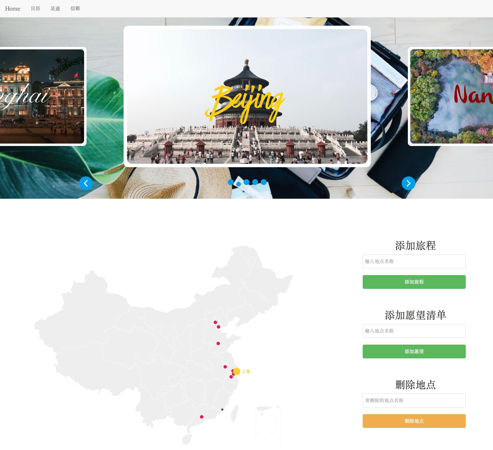

Jiayun Zhang

School of Computer Science
Fudan University
Shanghai, 201203, P.R.China
jiayunzhang15@fudan.edu.cn
About Me
I am an undergraduate student at the School of Computer Science at Fudan University. I have been a research assistant in the Mobile Systems and Networking (MSN) group since 2018, supervised by Prof. Yang Chen. Now I am visiting Aalto University as a research intern in the Mobile Cloud Computing (mc2) group, supervised by Prof. Yu Xiao. I am especially interested in machine learning and data-driven models of user behavior.
Here is my full CV.Publications
-

Detecting Malicious Accounts in Online Developer Communities Using Deep Learning
Qingyuan Gong, Jiayun Zhang, Yang Chen, Qi Li, Yu Xiao, Xin Wang, Pan Hui
ACM International Conference on Information and Knowledge Management, CIKM 2019
The openness of the online developer communities makes themselves vulnerable to different types of malicious attacks. In this work, we formulate the malicious account detection problem in online developer communities, and propose GitSec, a deep learning-based solution to detect malicious accounts based on the account profiles as well as dynamic activity characteristics. -

Identifying Structural Hole Spanners in Online Social Networks Using Machine Learning
Qingyuan Gong, Jiayun Zhang, Xin Wang, Yang Chen
Annual Conference of the ACM Special Interest Group on Data Communication, SIGCOMM Poster 2019
Existing solutions for identifying structural hole spanners normally require the knowledge of the entire social graph. In this paper, we propose a novel solution to uncover structural hole spanners according to the users’ profiles and user-generated contents with a machine learning-based model. We further leverage the ego networks and the cross-site linking function to enhance the identification. -

DeepLoc: A Location Preference Prediction System for Online Lodging Platforms
Yihan Ma, Hua Sun, Yang Chen, Jiayun Zhang, Yang Xu, Xin Wang, Pan Hui.
Chinese Conference on Computer Supported Cooperative Work and Social Computing, ChineseCSCW 2019
To make a booking on a online lodging platform such as Airbnb, a user usually needs to select a city first, then browses among prospective options. To improve user experience, we propose DeepLoc, a location preference prediction system, adopting deep learning technologies to predict the location preference of a user’s next booking based on her descriptive features and booking history.
Research
-

- Proposed a machine learning-based model for identifying structural hole spanners; leveraged the ego networks and the cross-site linking function to enhance the identification.
- Implemented the classifier by CatBoost. Achieved a test F1-Score of 0.857 and an AUC value of 0.856 on the Foursquare dataset.
- Contributed to a paper accepted by SIGCOMM Poster 2019.
-

A Representative User-centric Dataset of GitHub Developers. [ code ] May 2018 – Sep 2018
- Crawled user data and dependencies on GitHub in an unbiased manner.
- Built a representative user-centric dataset including the information of over 10 million GitHub Developers.
-

Malicious User Identification on Version Control Systems. Jun 2018 – Jun 2019
- Did a comparative study between the behaviors of legitimate users and malicious users on GitHub.
- Proposed GitSec, a deep learning-based system with Phased LSTM and attention mechanism to detect malicious accounts on VCS. Achieved a test F1-Score of 0.920 and an AUC value of 0.938 on the GitHub dataset.
- Contributed to a paper accepted by CIKM 2019.
-

Discovering Work Patterns of Developers. Jan 2019 – Present
- Designed a data-driven approach with Spectral Biclustering algorithm to identify developers’ work patterns with commit behaviors. Three representative work patterns were detected.
- Did empirical analysis on the relationship between work pattern and demographics, collaboration role and productivity.
- Conducted a survey over 93 developers to understand the situation of, reasons for, and work contents of working overtime.
-

- Devised a model with SVM for pneumonia detection based on medication records. A test accuracy of 0.915 was obtained on a real-world dataset collected from hospitals in Shanghai.
- Devised a prediction model with Time-Aware LSTM to predict one’s stage of diabetes based on previous diagnoses. Achieved a test F1-Score of 0.787 on the real-world dataset.
- Developed a web-based interactive system for diabetes prediction; the system could receive historical diagnoses from users, predict the stages of diabetes using the trained model and output the results on the webpage.
supervised by Prof. Yang Chen, Fudan University. Mar 2019 – Present
supervised by Prof. Yang Chen, Fudan University.
supervised by Prof. Yun Xiong, Fudan University. May 2017 – Apr 2018
Work Experience
-

Aalto University. Espoo, Finland
Summer Research Intern. Jun 2019 – Present
-

VMware, Inc. Shanghai, China
MTS (Member of Technical Staff) Intern. Apr 2018 – Oct 2018
Selected Projects
-

Raindrop Removal From a Single Image, advised by Prof. Junping Zhang, Fudan Univeristy. [ code ] Jun 2019
Devised a deep-learning-based model for raindrop removal with ResNet, Dilated CNN and ConvLSTM. The model could identify the location and intensity of raindrops and eliminate the raindrops. Incorporated Gaussian filtering to remove the background interference, improving the network capability by focusing on high frequency detail of the images. Achieved results with PSNR as 27.70 and SSIM as 0.8801 on real-world images. -

3D Parkour Game. [ code ] Dec 2017
Developed a full-featured parkour game; built 3D game scenes in Unity, designed animation effects and user interactions; implemented the game logic with Unity Game scripts written in C#. -

Travel Management Website. Nov 2017
Developed a website for recording trips using Django and ECharts. Users can mark the cities they have visited and the cities they want to visit with different colors on the map that embedded in the webpage. -
Restaurant Reservation System. Nov 2017
Designed the communication protocol with Socket programming; developed the backend of the reservation system which can help customers to check the bookings of the restaurants and make reservations.
Selected Awards
- Best Student Award, Mobile Systems and Networking Group, Fudan University (1 out of 32) 2019
- Second Class Scholarship for Outstanding Students, Fudan University (Top 10%) 2019
- Chun-Tsung Program, Endowment funded by Nobel Laureate Dr. Tsung-Dao Lee 2019
- Third Class Scholarship for Outstanding Students, Fudan University 2018
- Xiyuan Scholar, Undergraduate Research Program in Fudan University 2018
- Third Class Scholarship for Outstanding Students, Fudan University 2016